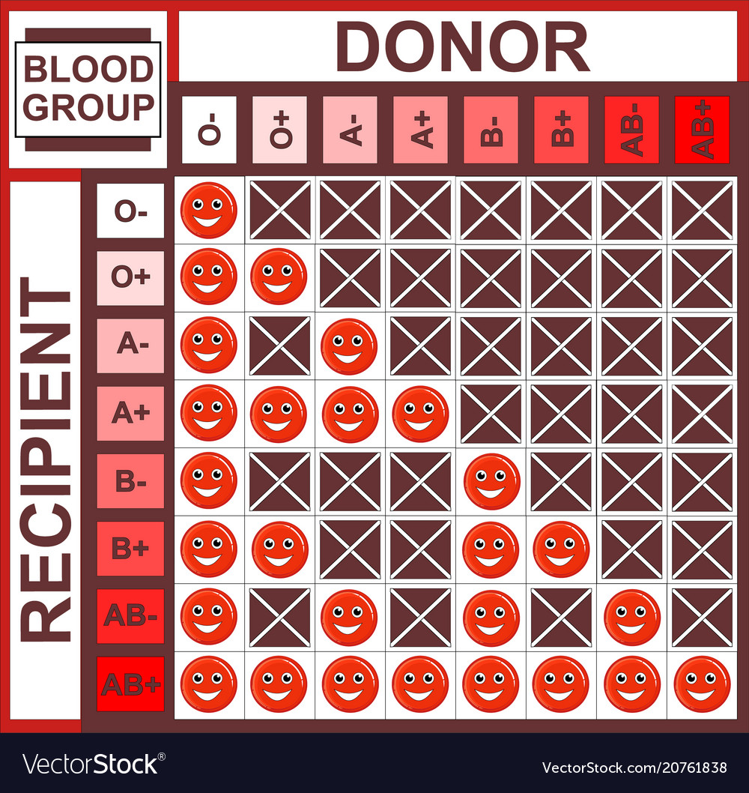

About Blood
Blood is life
From the day that human life is conceived, blood fulfils a life giving and nurturing role. Blood is the fluid of growth, transporting nourishment from digestion and hormones from glands throughout the body. Blood is the fluid of health, transporting disease fighting substances to the tissue and body waste to the kidneys.
Because it contains living cells, blood is alive. Unlike medications that are manufactured, blood cannot be manufactured. Healthy donors are the only source of blood for those who need it.
If it was not for blood donors, life-saving medical treatment for children with life threatening anaemia, trauma victims, women with pregnancy related complications, organ transplants, bone marrow transplants, complicated surgical procedures and cancer treatments would not be possible.
What is your type?

The differences in human blood are due to the presence or absence of certain protein molecules called antigens and antibodies. The antigens are located on the surface of the red blood cells and the antibodies are in the blood plasma. Individuals have different types and combinations of these molecules.
The blood group you belong to depends on what you have inherited from your parents.
To date, more than 20 genetically determined blood group systems exist, but the AB0 and Rh blood group systems are the most important ones used for blood transfusions.
Not all blood groups are compatible with each other. Mixing incompatible blood groups leads to blood clumping, or agglutination, which is dangerous for individuals./p>
What is the significance of my blood group?

All donors belong to one of four blood groups: A, B, AB or O. You are also classified as either Rh positive or Rh negative. There are therefore eight different main blood groups.
Not all blood groups are compatible with each other and the success of modern transfusion medicine depends on classifying and matching donors and patients correctly.
Group O blood is known as the universal blood type, as it can be given to patients of any blood group./p>
Rh Factor blood grouping system
Many people also have a so-called Rh factor on the red blood cell surface. This is also an antigen and those who have it are called Rh+. Those who haven’t are called Rh-.
A person with Rh- blood does not have Rh antibodies naturally in the blood plasma (as one can have A or B antibodies, for instance). But a person with Rh- blood can develop Rh antibodies in the blood plasma if he or she receives blood from a person with Rh+ blood, whose Rh antigens can trigger the production of Rh antibodies. A person with Rh+ blood can receive blood from a person with Rh- blood without any problems.